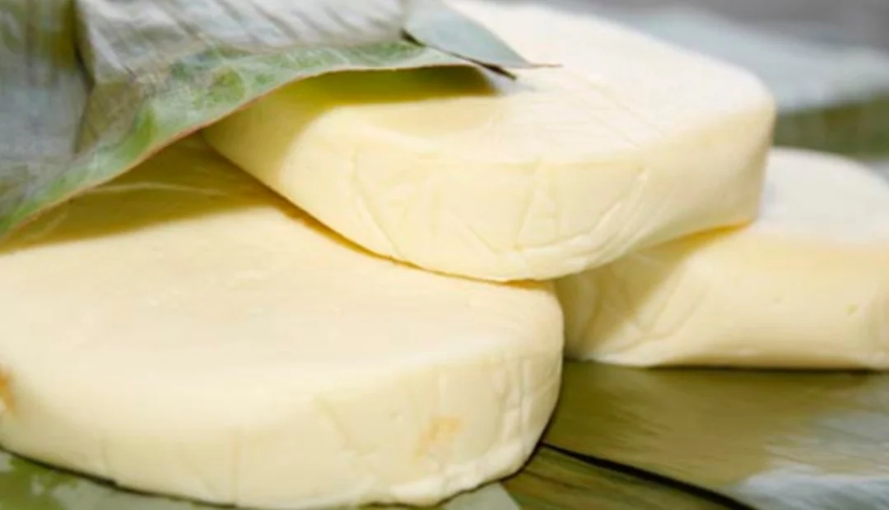
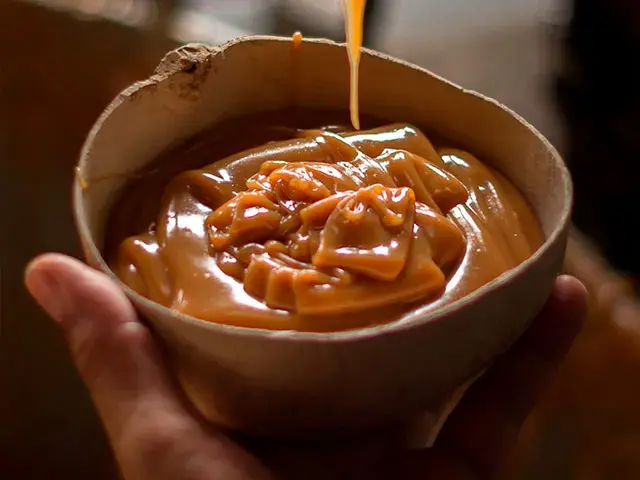
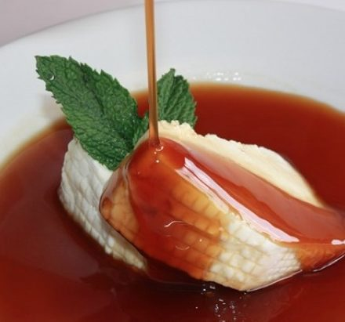

Queso de Hoja Simijense
Queso artesanal fresco envuelto en hoja de plátano o bijao, de textura suave y sabor característico de la cuenca lechera.
Descubre la riqueza lechera y las recetas dulces artesanales que identifican al municipio de Simijaca.

Queso artesanal fresco envuelto en hoja de plátano o bijao, de textura suave y sabor característico de la cuenca lechera.

Dulce de leche elaborado a fuego lento en paila de cobre según la receta tradicional de los hatos locales.

Postre típico andino que combina la cuajada fresca con almíbar tibio de panela de la región.